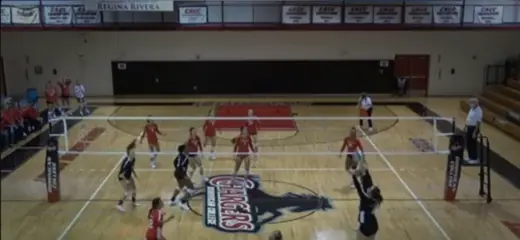
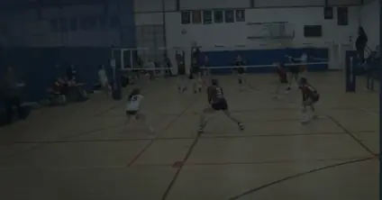

Farmingham
Team StatsSetter TendenciesTrends
Team Stats by Rotation
Team StatsSide Out
RotationWLSO%
Rotation 110566.67%
Rotation 29469.23%
Rotation 38753.33%
Rotation 481240.00%
Rotation 58947.06%
Rotation 671041.55%
Overall504751.55%
Farmingham
Team StatsSetter TendenciesTrends
Setter Tendencies
38%32 Att
32%19 Att
50%16 Att
0 Att
0%5 Att
0%1 Att
0 Att
0 Att
0 Att
Low A%
High A%
Farmingham
Team StatsSetter TendenciesTrends
Trends by Athlete
#1 Hannah Monk
Library

GAME Analyzing… ✓ 3W 3–1 Monday Game
Practice Weekend PracticeFeatured case study · 3 parts
Merging a tangle of products into one
Several volleyball products folded into one. Too big for a single read, so it's told in three case studies that each stand on their own.